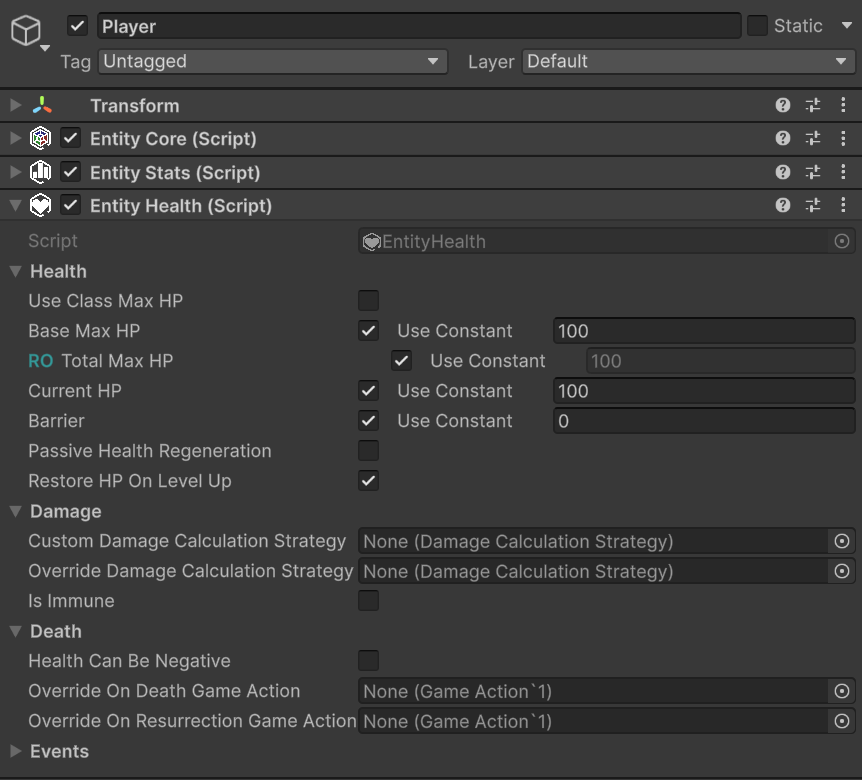
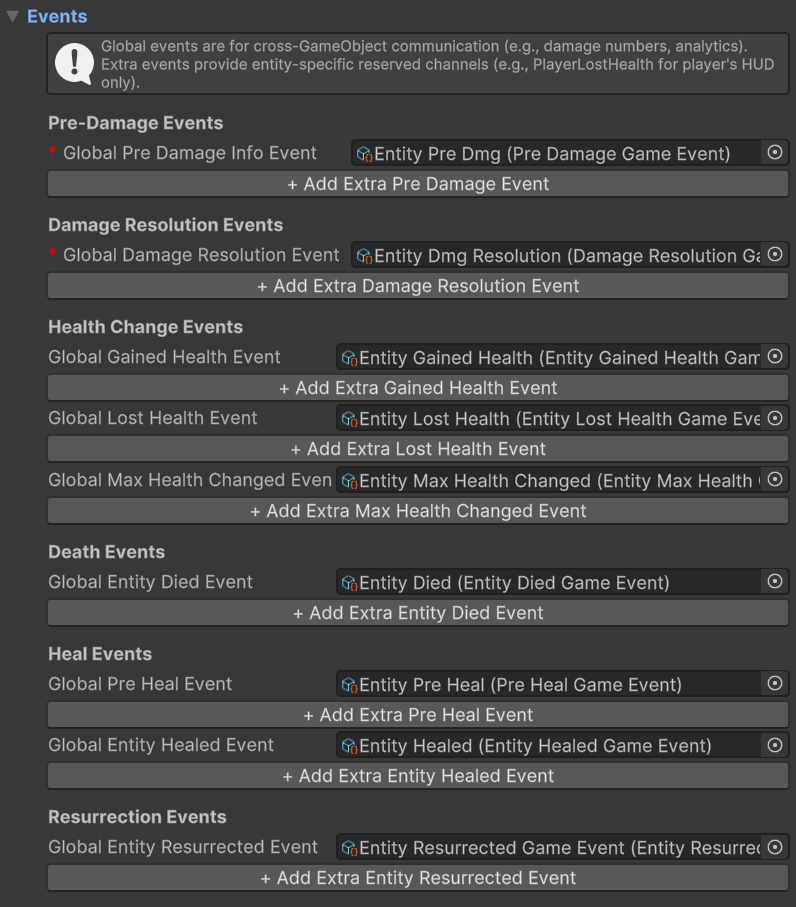

EntityHealth Component
With Astra RPG Health, the new EntityHealth MonoBehaviour allows you to add health points to an entity. In this way, the entity can take damage and, consequently, die.
Here is an example of the EntityHealth component:

The events section is collapsed by default since there are many events, and it is more practical to expand it only when necessary.
Let's proceed in order and analyze every property of the EntityHealth component.
Health
- Use Class Max HP: Boolean indicating whether to use the max health points defined in the entity's class as the base max health. If disabled, you can manually specify the base max health for the entity.
- Base Max HP: LongRef representing the base max health of the entity. If "Use Class Max HP" is enabled, this value is marked with teal
RO(Read Only). Read Only, for LongRef fields, makesconstvalues non-editable, and suggests not manually modifying values contained by the associated LongVar variable, if aconstvalue is not used. - Total Max HP: LongRef representing the total max health of the entity, calculated based on the base max health and any modifiers. This field is always read-only (RO) and is automatically updated when base max health or modifiers change.
- Current HP: LongRef representing the entity's current health points. Editable field that is automatically updated when the entity takes damage or is healed. This field is also updated if
Base Max HPis modified from the inspector.
Note
If Current HP drops to 0, modifying Base Max HP will not update Current HP. This is intended behavior, as if an entity is dead, it makes no sense for its health points to be modified by a change in max health. If instead the entity is alive, modifying Base Max HP will update Current HP accordingly even if Current HP is currently 0.
This can happen if, for example, you change from 10 base max HP to 25 by deleting the text box with backspace: 10 (backspace) -> 1 (backspace) -> 0 (2 pressed) -> 2 (5 pressed) -> 25. Note that by deleting all numbers and leaving the box empty, Base Max HP becomes 0, and consequently Current HP also becomes 0. At this point, the entity is considered dead.
- Barrier: LongRef representing any barrier points (or temporary HP) of the entity. The barrier absorbs damage before it affects the entity's health points.
- Passive Health Regeneration: Boolean that decrees whether the entity passively regenerates HP over time or not. The regeneration frequency, as well as the statistic to consider for the amount of passively regenerated HP, are defined in the Astra RPG Health Config configuration.
- Restore HP On Level Up: Boolean indicating whether the entity is fully healed when leveling up.
Damage
For a better understanding of the first two properties of this section, I recommend taking a look at the Damage Calculation Strategy documentation. Simply put, a Damage Calculation Strategy defines how the damage an entity is about to take is calculated (e.g., applying damage reduction for the defensive stat first, or damage absorption by the barrier first, when to apply the critical multiplier, etc.). Also recall that a default strategy can be assigned via configuration. See Default Damage Calculation Strategy.
- Custom Damage Calculation Strategy: Field of type
DamageCalculationStrategy. If the entity should use a custom damage calculation strategy, you can specify it here. This, if defined, takes precedence over the default one defined via configuration. A common use case could be, for example, a boss that cannot take more than 10% of its max health in damage at a time. - Override Damage Calculation Strategy: Field of type
DamageCalculationStrategy. If defined, it takes precedence over all other damage calculation strategies. Designed to be assigned at runtime to implement special effects or for testing/debug. For example, an entity is affected by a debuff that turns all physical damage into guaranteed critical hits. This debuff could therefore be implemented through a custom strategy assigned to the entity in this field. - Is Immune: Boolean indicating whether the entity is immune to all damage or not. If enabled, the entity will take no damage, regardless of the damage calculation strategy used.
The most important method of the package: TakeDamage
The API method you will use most with this package is certainly TakeDamage, whose responsibility is to apply damage to the entity, taking into account modifiers, immunity, the damage calculation strategy, and other relevant mechanics. This method takes a PreDamageContext as input, which contains all relevant information about the damage you intend to inflict. For more details on this context, I recommend reading the documentation PreDamageContext and DamageResolutionContext.
The recommended way via code to inflict damage on an entity is as follows:
- Construct an instance of
PreDamageContextwith all relevant information about the damage you intend to inflict through its fluent builder. - Call
TakeDamagepassing the newly constructed context.
Suppose we are implementing a skill that deals 50 fire damage to the target. The code to apply damage to the target could be the following:
// Assuming that:
// - dmgType is a DamageType representing fire damage
// - dmgSource is a DamageSource representing the damage coming from a skill
// - target is the EntityCore that we want to damage
// - skillCaster is the EntityCore that casts the skill
// first we ensure that the target has an EntityHealth component
if (target.TryGetComponent(out EntityHealth targetHealth)) {
// then we build the PreDamageContext with all the relevant information
var preDamageContext = PreDamageContext.Builder
.WithAmount(50)
.WithType(dmgType)
.WithSource(dmgSource)
.WithTarget(target)
.WithDealer(skillCaster)
.Build();
// finally, we call TakeDamage to apply the damage to the target
targetHealth.TakeDamage(preDamageContext);
}
Thanks to the PreDamageContext fluent builder, the IDE will automatically suggest the fields to fill in one at a time. As long as it presents them one at a time, it means they are required fields. If instead it presents more than one at a time, it means those fields are optional, and you can decide whether to fill them in or build the context without them. Optional fields are, for example, the critical hit flag and the critical multiplier. In the example, for simplicity, I did not fill in these fields.
Now, we know that hardcoding the damage value directly in the code is not a good practice. Let's see how to use a ScalingFormula to dynamically calculate the amount of damage to inflict. The step builder creation would become the following:
// Assuming that scalingFormula is a ScalingFormula that calculates the damage amount based on the skill caster's stats...
// ...we calculate the damage amount by evaluating the scaling formula
long damageAmount = scalingFormula.CalculateValue(skillCaster);
var preDamageContext = PreDamageContext.Builder
.WithAmount(damageAmount)
.WithType(dmgType)
.WithSource(dmgSource)
.WithTarget(target)
.WithDealer(skillCaster)
.Build();
Healing
An entity can be healed in 4 different ways:
- Direct healing through the
Healmethod. - Health regeneration. This can be passive, as defined in the Health Regeneration configuration, so automatically triggered by the framework every so often, or it can be manually activated via the
ManualHealthRegenerationTickmethod. Also for the latter, you must configure the statistic to consider for the calculation of healing through the configuration. - Through lifesteal. See Lifesteal for more details on this mechanic.
- Via resurrection with the two
Resurrectmethods. One to resurrect the entity with a percentage of HP, and one to resurrect it with a fixed amount of health points. Applicable only if the entity is dead.
Both regeneration (both passive and manual), lifesteal, and resurrection use, behind the scenes, the Heal method to effectively heal the entity.
Since the Heal method will be widely used, I show here an example of its use via API.
Suppose we want to heal an entity for 20% of its total max HP. The code could be the following:
// Assuming that:
// - healSource is a HealSource representing the healing coming from a skill
// - skillCaster is the EntityCore that casts the healing skill
// - target is the EntityCore that we want to heal
if (target.TryGetComponent(out EntityHealth targetHealth)) {
// in case the target has a EntityHealth component...
long healAmount = target.GetMaxHpPortion(0.2d);
target.Heal(PreHealContext.Builder
.WithAmount(healAmount)
.WithSource(healSource)
.WithHealer(skillCaster)
.WithTarget(target.EntityCore)
.Build());
}
Obviously, also in this case, it would be good practice to at least serialize the healing value in a serialized field so as to be able to modify it from the inspector, instead of having it hardcoded in the code. For simplicity, however, I did not add this step in the example.
Here too, as for PreDamageContext, thanks to the PreHealContext fluent builder, the IDE will automatically suggest the fields to fill in one at a time, leaving the optional ones for last.
Death
- Health Can Be Negative: Boolean indicating whether the entity's health points can drop below 0 before dying. If disabled, the entity's health points will never drop below 0, and the entity will die as soon as its health points reach 0. If enabled, the entity's health points can drop below 0, and the entity will die only when its health points reach a specified negative value (Death Threshold).
- Death Threshold: LongRef representing the entity's death threshold. Visible only if "Health Can Be Negative" is enabled. If the entity's health points reach this threshold, the entity dies.
- Override On Death Game Action: Game Action that is automatically executed when the entity dies. If defined, this takes precedence over the one defined in the configuration. Useful for implementing special behaviors upon an entity's death (for example, entities that explode upon death dealing area damage).
- Override On Resurrection Game Action: Game Action that is automatically executed when the entity is resurrected. If defined, this takes precedence over the one defined in the configuration. Useful for implementing special behaviors upon an entity's resurrection.
Damage vs RemoveHealth and Heal vs AddHealth
EntityHealth provides a couple of public methods to increase current HP and two to decrease them:
HealandAddHealthto increase current HP.TakeDamageandRemoveHealthto decrease current HP.
It is important to clarify why two different methods exist to increase and decrease current HP, and when to use one or the other.
AddHealth and RemoveHealth operate at a lower level of abstraction than Heal and Damage, as they directly modify the entity's current HP by a specified long value, without passing through the damage calculation pipeline or without taking into account any healing or damage modifiers. They are very predictable and direct methods, and are mainly used internally by the framework.
These methods can be useful in specific situations where the gain of HP is not due to healing, or the loss of HP is not due to damage, but rather to particular mechanics that require a direct modification of current HP. For example, suppose that following a cutscene we want to force the player's HP to 1. In this case, we could use RemoveHealth to remove all HP except 1, without having to worry about any damage modifiers or the damage calculation strategy that would alter the damage taken based on the player's stats and equipment, as well as raising damage events that could trigger game logic we don't want to activate in this specific case.
Heal and TakeDamage, on the other hand, are more complex methods that take into account various factors such as the damage calculation strategy, damage immunity, healing modifiers, etc. These methods are intended to be used primarily by game developers to apply damage and healing to entities, as they guarantee that all mechanics and rules of the health system are respected. For example, if you want to inflict damage on an entity, it is advisable to use the TakeDamage method, so that the damage is calculated correctly based on the configured damage calculation strategy, and that any immunities or modifiers are taken into consideration.
Unsurprisingly, Heal and TakeDamage internally use AddHealth and RemoveHealth to effectively modify the entity's current HP after calculating the net HP gain or loss to apply.
In 99% of cases, you will use Heal and TakeDamage to apply healing and damage to entities. AddHealth and RemoveHealth are available to cover rarer and more particular use cases.
Events
Events are, by default, collapsed as there are many of them and they would expand excessively in the inspector. By opening them, we should see something like this: 
In the image, you see already assigned events, but when you first add the component, all events will be unassigned and empty.
Let's start by introducing the difference between Global Events and Extra Events.
Global Events
Global Events are fundamental events that transmit important information to the whole framework. Events assigned to these slots must have a global scope, i.e., they must be able to be listened to by any entity or system in the game. These events are used by the framework to handle essential features, such as lifesteal and other mechanics that require centralized communication between the various parts of the system.
Warning
Reserving these slots for events of a global nature is fundamental to ensure the correct functioning of the framework. Assigning Game Event instances that are specific to one or a few entities would involve operating problems at the framework level.
Extra Events
Extra Events, instead, are designed to transmit information to specific components or a restricted circle of entities. A practical example is the communication between the player's EntityHealth and the HUD displaying their HP: only the player possesses a dedicated HUD, so it is useful to assign an exclusive event for this interaction. In this way, the GameEvent associated with the player's EntityHealth is listened to only by the HUD, guaranteeing clear compartmentation and greater efficiency. Thus, the HUD does not receive events from all entities, but only those relevant to the player.
Events Breakdown
Here is a detailed description of each event. Each type of event has both the global event and a list of extra events, but it is sufficient to describe each event once.
Damage Related Events
To better understand the first two events of this section, I recommend taking a look at the Damage documentation to get a better understanding of damage in Astra RPG Health.
- Pre Damage Info Event: Event raised before the entity takes damage, and before the damage calculation pipeline calculates the net damage. This event transmits information about the damage the entity is about to take, such as the damage type, the damage source (an entity,
nullif not applicable), the damage source type (e.g., environmental, skill, trap, etc.), the raw damage you intend to inflict, and other relevant information. For more details regarding the context parameter and its fields, refer to the API documentation PreDamageContext. This event can be useful for implementing passive abilities or, in general, advanced mechanics that trigger effects in response to specific conditions related to the damage an entity is about to take. For example, a debuff or status modifier that amplifies critical damage taken by 50% when the damage type is "Fire", or a passive ability that negates all instances of damage currently being taken if they had raw damage less than 50. - Damage Resolution Event: Event raised after the entity has taken or ignored damage. Similarly to the context parameter of the previous event, this event transmits detailed information about the damage just taken or ignored. For more details regarding the context parameter and its fields, refer to the API documentation DamageResolutionContext.
In general, the thumb rule for deciding whether to use the Pre Damage Info Event or the Damage Resolution Event is the following: if you want to manipulate the damage an entity is about to take, it is better to subscribe to Pre Damage Info Event, and modify the context as desired; if instead you want to react to the damage an entity has just taken, and trigger effects in response to it, it is better to subscribe to Damage Resolution Event, and react based on the information transmitted by its context.
Health Related Events
- Gained Health Event: Event raised when the entity gains HP, whether through healing or other mechanisms (e.g., Max HP modifiers that caused a gain of health). Refer to the EntityHealthChangedContext API for more details on the context parameter.
- Lost Health Event: Event raised when the entity loses HP, whether through taking damage or other mechanisms (e.g., Max HP modifiers that caused a loss of health). The context parameter of this event is the same as the previous one, so refer to the EntityHealthChangedContext API for more details.
- Max Health Changed Event: Event raised when an entity's total max health points change. This event is raised both when total max hp increase and when they decrease. See EntityMaxHealthChangedContext API for more details on the context parameter.
- Entity Died Event: Event raised when the entity dies. See EntityDiedContext API for more details on the context parameter.
Healing Related Events
- Pre Heal Event: Event raised before the entity is healed. This event transmits information about the healing the entity is about to receive, such as the amount of HP you intend to heal, the entity that provided the healing (
nullif not applicable), the heal source (e.g., skill, item, potion, etc.) and other relevant information. For more details regarding the context parameter and its fields, refer to the API documentation PreHealContext. The amount of health points intended to heal, transmitted by this event, is the value before applying any healing modifiers. This event can be useful for implementing passive abilities or, in general, advanced mechanics that trigger effects in response to specific conditions related to the healing an entity is about to receive. For example, a buff that amplifies healing derived from potions (heal source) by 30%. - Entity Healed Event: Event raised when the entity has been healed. This event transmits information about the healing just received, such as the amount of HP the entity actually gained after the application of any healing modifiers. For more on the context parameter see the ReceivedHealContext API.
Here too, as for damage events, the thumb rule for deciding whether to use the Pre Heal Event or the Entity Healed Event is the following: if you want to manipulate the healing an entity is about to receive, it is better to subscribe to Pre Heal Event, and modify the context as desired; if instead you want to react to the healing an entity has just received, and trigger effects in response to it, it is better to subscribe to Entity Healed Event, and react based on the information transmitted by its context.
Resurrection Related Events
- Entity Resurrected Event: Event raised when the entity is resurrected. See ResurrectionContext API for more details on the context parameter.